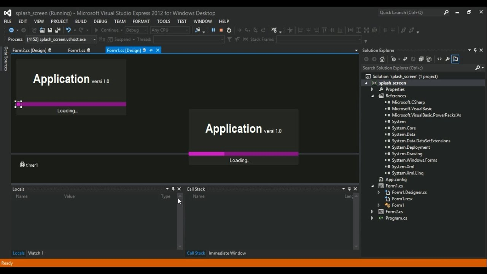
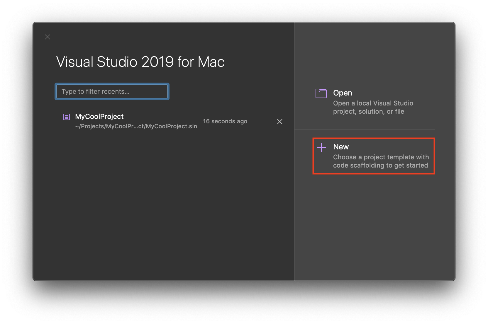
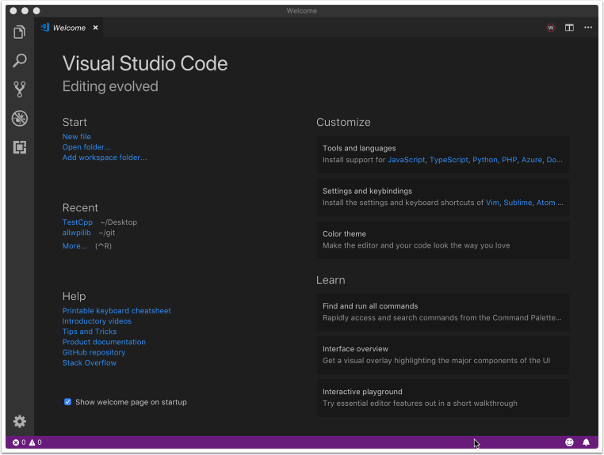
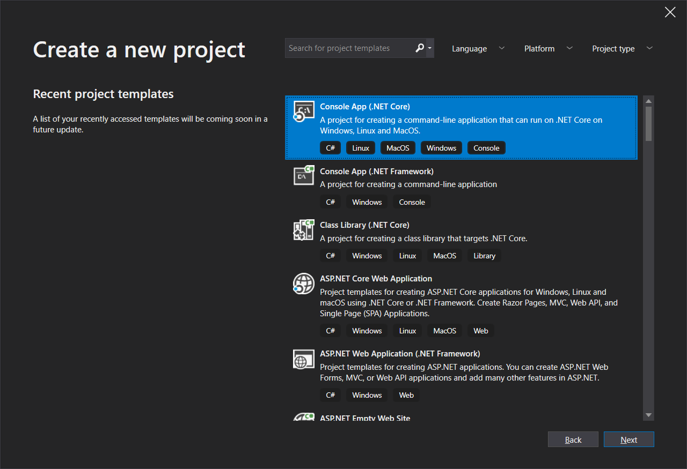
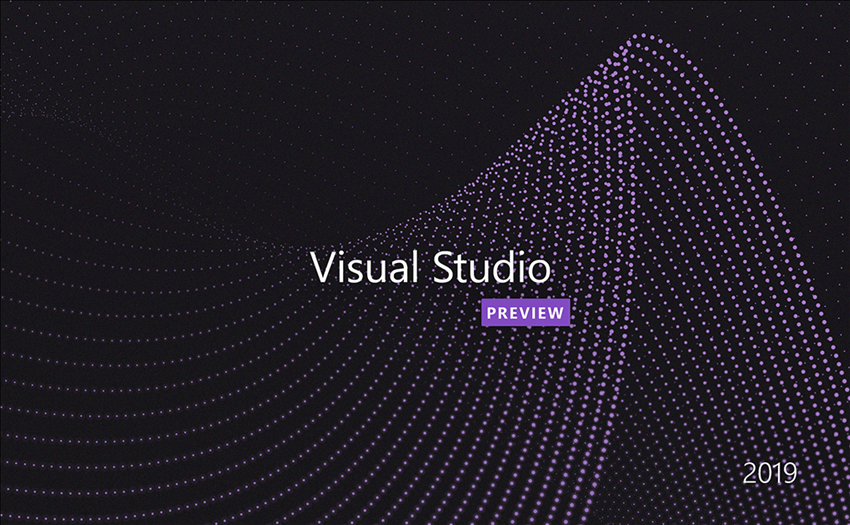

Presentation de Visual Studio et quelques impressions ecran de celui ci:
L’un des éditeurs de code les plus populaires, sinon le plus populaire, Visual Studio Code est la référence pour de nombreux développeurs malgré sa sortie relativement récente en 2015. Il est extrêmement robuste et personnalisable, avec une interface que vous pouvez personnaliser à votre goût, et des extensions pour ajouter encore plus de fonctionnalités.
L’éditeur supporte HTML, CSS, JavaScript et PHP, vous n’aurez donc jamais à changer d’outil. Et il utilise le système IntelliSense pour la coloration syntaxique et l’auto-complétion, en plus d’inclure le support du contrôle de version Git/Github et la fonctionnalité FTP.
Enfin, VSC fonctionne avec Windows, Mac et Linux, donc presque tout le monde peut l’utiliser. Il y a beaucoup de fonctionnalités dans ce programme, donc il pourrait être un peu lourd pour les tout nouveaux développeurs. Mais apprenez à l’utiliser, et vous aurez presque tous les outils dont vous aurez besoin.
    